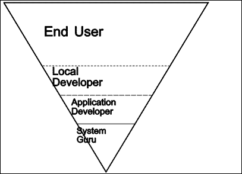

The title of this thesis, Design of an Object-Oriented Database Language: Bridging the gap between Organizational Requirements and the Technical Implementation of an Object-Oriented Information System, while long, is more pithy than turgid, and though hardly terse, is more cogent than superfluous. This section summarizes the preceding material in terms of the elements of the title.
Design is the process of selecting or inventing a plan within a space of alternatives. In this thesis we have presented the design of an object-oriented database language, whose purpose is to assist in the creation of object-oriented information systems. Design implies that some care has been taken to ensure that the plan is complete, appropriate to the purpose for which it was developed, and elegant in the sense of containing no extraneous elements.
We have chosen a solution oriented towards objects, as opposed to solutions oriented towards relations, or data, or process. An object encapsulates the notions of data and process, forming a package which can react to its environment by exhibiting particular kinds of behavior.
Our project was motivated by and grew out of a technology which was data oriented. This technology itself was created in part as a reaction to the relation oriented view of data which has been prevalent for two decades. Pure data storage is insufficient for information systems, which must be able to interpret the stored data. This implies processing. Object orientation allows a unification of the complementary needs of data storage and data interpretation.
Persistence of data in some kind of store is a pervasive theme in this thesis. TOOL by itself is an object-oriented database, in that objects persist from one invocation of the system to the next.
We have described the design of a particular kind of programming environment, whose intended use is in the creation of many different kinds of object-oriented information systems. We have demonstrated that the TOOL programming environment has the potential to increase the number of people who are able to produce object-oriented information systems, and to increase the productivity of those professionals who produce object-oriented information systems.
A secondary theme has been to distinguish between the requirements felt by organizations for object-oriented information systems, on the one hand, and the technical implementation details, on the other hand. We have claimed that this distinction is manifest in a gap which our tools can help to bridge.
Henninger (1991) noted of computer supported cooperative work, that there seemed to be "...a lack of analysis of work environments to motivate the need for systems... there seemed to be a focus on technology for the sake of technology, without much thought about what people actually need."
The local developers who emerge within end user communities "provide an important bridge between system administrators on the one side and domain experts on the other, as well as communicating with users as they help them in debugging, learning new capabilities, and so forth" (Gantt & Nardi, 1992).
Organizations are not the same as people, but, like people, they are animate (Gaines, 1991). Their needs, as felt by the people who constitute them, are not met well by programming systems which require specialist work. And programming specialists are rarely well-suited to determine what users of their work will actually need to do.
We have implemented and begun evaluation of an actual prototype system. This is more than a theoretical analysis of a problem area, but rather the beginning of experiments with a proposed solution to a problem area.
A complete solution to the gap might be an automated system, which, given the organizational requirements, expressed in a suitable language, would produce a workable information system, all without human intervention. If an organization's manager could achieve an information system merely by stating the requirements, we would not need management information services, there would be no software crisis, and there would no longer be a gap to be bridged.
Until complete automation becomes possible, if it ever does, people will have to be involved. These people will benefit by having appropriate tools. And, since people are tool-makers, they will need tools capable of making further tools, and so on. Tools come in two varieties. Enabling tools allow tasks to be performed which were previously either impossible or at least impractical. Productivity tools increase the amount of work that an already skilled professional can accomplish in a given amount of time. Computer applications typically can be of either type, or both simultaneously. We have claimed that TOOL is both an enabling and a productivity tool for the construction of information systems, as well as further tools for that purpose.
|  |
| Figure 8.1 Programming with the TOOL virtual environment |
TOOL has the potential to vastly improve our productivity. It provides a definite barrier between system guru code (C and assembly) and application code (TOOL). The computing power needed for applications is available, in the high level language, in a form that is more easily useable. Knowledge of how a particular hardware and O/S platform operate is not needed. This means that application code can be written without this knowledge.
Besides simplifying the task of application development, this specialization into system and application code has other benefits, most notably portability. Application code will run immediately on any platform for which there exists an implementation of the TOOL virtual environment. Furthermore, the efforts expended by the system gurus to achieve good performance on each platform are shared by all the application code.
The TOOL environment includes a full set of language tools: source code browsers, compiler, direct interpretation, etc. This means that application developers are free to allow more computational power through to local developers. It is possible to view an application as an extension of the TOOL virtual environment. Local developers can then take this extension and extend it further.
The protection levels built into the TOOL virtual environment allow developers at all levels to specify which portions of their work are available to be extended. Thus, with the TOOL virtual environment, the barrier lines can be drawn more uniformly, as shown in Figure 8.1.
What we have accomplished here may seem very broad in scope. This is necessary because we have been studying an entire system and the way in which it fits into an even larger and more comprehensive system. Contributions have been made from the philosophical foundations, through a methodology focusing on both users and organizations, to solutions to numerous technical problems.
The primary philosophical contribution is the adaptation of Popper's three world epistemology to the enterprise of software construction. This framework provided anchor points during the broad-ranging task of putting together a large software system.
We introduced a software development model in which the technology, the person using it, and the organization for which that person works each play an equally important part. We have specialized to consider only those cases in which the work product is another piece of software. We demonstrate that care must be taken to consider both the users and the organizations which will employ this product. Again, we specialized on the case where the user of the initial product will be creating yet another piece of software. We then looked at supporting this process with an unbounded number of stages each producing software.
We interviewed both software users in this context, and persons responsible for the direction of organizations which use software in this way. These interviews led to a better understanding of the requirements of a programming environment to support unbounded multi-generational software development.
We analyzed Smalltalk in terms of our philosophical foundations and considered its suitability as a base for multi-generational software development. We identified its essential features. More importantly, we made some cuts, removing what we consider to be inessential features, at least for our purposes. Finally, we described several additions necessary to meet our requirements.
We have described the design of an object-oriented programming environment. From its ancestor, Smalltalk, it inherits many valuable characteristics. However, TOOL is significantly different in design, where our requirements were not satisfied by Smalltalk. We have implemented a prototype of the TOOL design. This prototype has been evaluated by being used to produce both object-oriented information systems and tools which can be used to produce further such systems. We created a system capable of being the base of a multi-generational software development environment. We were able to do this in a tenth the space required by Smalltalk, even with the addition of new features. In the process, we made some discoveries and some inventions.
One of our requirements was a reduction in the amount of hardware resources required for the base system. To achieve this, we simplified the execution model. In the process, we sacrificed the first-class nature of the block. Our study of Smalltalk indicated that blocks which survive the execution of the method defining them are not widely used, and can be replaced in different ways, sometimes to advantage.
Our requirements dictated simplicity. We felt that the purity of the object-oriented message-passing paradigm in Smalltalk could be sacrificed. As a result, we defined a syntax in which basic control structures are acknowledged to be compiler constructs and are indicated by leading keywords.
Our requirements dictated smooth handling of numbers, including many simple fractions. Round-off errors being intolerable, we were led to replace floating point implementation of approximations to real numbers by a floating slash rational approximation (Matula & Kornerup, 1985). We integrated our representations of small and large integers with our approximations to real numbers into a coherent system. Transitions from one representation class to another occur as needed, and transparently to our users.
We invented anonymous methods. This was partly motivated by some needs introduced by the simplification of blocks. We also invented a syntax for literal methods. This syntax was also useful in improving the file out format for source code.
We invented a unique combination of garbage collection and virtual memory, giving us an object-faulting mechanism which allows TOOL to run in less memory than its image requires.
We invented a ring protection system and showed how it could be used to protect intellectual property, while still allowing sufficient computational power to be passed on to the next generation software developers.
We demonstrated that our environment could run on multiple platforms. We used C to implement the virtual environment and made it work on several platforms. The TOOL image then worked in precisely the same way on some very different systems.
The current limitation of TOOL to character-oriented systems might be considered a liability. TOOL does, however, have primitives allowing graphics, though we have not had these long enough to evaluate their use. Besides, with Nardi and Miller (1990), "we question whether graphics per se is really the key to user programming languages."
We integrated a database engine into the system. In the process, we learned much about the problems inherent in matching database operations to programmed operations.
A software system, and in particular especially a programming language and environment is in one sense a world one entity and in another sense, it belongs to world 3. In the first of these senses, our work has been successful þ we have met, and in some cases exceeded our requirements. In the second sense, however, it seems unlikely that TOOL will succeed, at least in its present, character-oriented garb. There is a thriving Smalltalk community, which indicates that a critical mass of world 2 entities have committed to the continued existence and evolution of the world 3 Smalltalk. It is possible to be a technical (world one) success, and yet fail in the larger sense (of world three).
In analyzing TOOL's failure to capture the loyalty and commitment of a sufficient number of people, say, to continue to exist, an irony emerges. Our methodology provides that a software system, created as an artifact by a small group of people for use by a relatively larger group can succeed only to the extent that it fits in to the needs and culture of the group it is intending to serve. The sublime irony is that TOOL has failed mainly because, in setting our requirements, we failed to pay enough attention to our own methodology!
We were unable to test the ability TOOL provides to allow users of TOOL applications to customize their environments for two reasons. First of all, we have not been able to release a TOOL product which includes the programming environment--the one shipping product has been sealed-off, not because of a lack of confidence in TOOL, but because of a lack of resources to adequately document TOOL itself. Secondly, we have not had the resources to produce an application whose users would perceive a compelling need for TOOL's programming environment. DataPerfect was to have been this application, but its further development has been curtailed for reasons other than TOOL.
The key problem addressed in this thesis is bridging the gap between the human side and the machine side, between people and technology.
We are talking about systems that must fit into a human organization, that need to meet the users on their own terms. The data such systems deal with is of tremendous value to the organization and its people. Those who stand to profit from the data need to organize it and reorganize it, to correlate, summarize and draw conclusions from it. Such conclusions may have tremendous impact not only on the users, but also on the customers of the organization and others whose lives are affected by it.
Yet the systems, at their heart, have silicon processors, blindly and dispassionately manipulating this precious data at unthinkable rates of speed. Hundreds of thousands of bytes of instructions must be prepared to satisfy the ravenous appetite of the processors. Only if these instructions are accurate in every particular, down to the last bit of the last byte, will the system effectively serve the organization and its people.
Ironically, the structure of the thesis mirrors this dichotomy. The fuzzy, nebulous human aspirations for data base systems stand in stark contrast to the precise, digital machinery of the language and data base engines.
We begin with a study of a handful of human organizations (Chapter 2). Each has a legacy from the past: immense quantities of data, organized as well as humanly possible. It often seems as if the organization exists primarily to accumulate data. In the struggle to meet the ever pressing needs of its customers, gaining time by having them fill out endless forms, it accretes new data faster than it can organize and exploit it. As the quantity of data increases, so its potential value increases and the needs becomes ever more urgent.
Countless man hours have been spent designing systems to collect, categorize and catalog data. Countless more are spent to adapt such systems to the specific needs of each organization. Still the potential value of the data exceeds the benefits actually realized. We describe these systems in general, classify them, and attempt an explanation of their inadequacies, from the human side of the equation (Chapter 3).
Given this predicament, we tend to enthusiastically welcome any proffered solution that seems at all reasonable. Such is our response to the object-oriented paradigm. Having explained why it might at least plausibly offer hope for a solution to the organization's data base needs and aspirations, we examine this paradigm in more detail. Selecting a specific system, Smalltalk, as the representative, we examine the inner workings of objects as models of reality (Chapter 4). From this, the machine perspective, the human aspirations that have ultimately led us here may seem dim and remote. Yet, it is here that we must understand what it is about the basis of object-orientation that may help us address those higher-level problems.
From the details of Smalltalk's concepts, through a critique of their effectiveness for our task, we arrive at an evolutionary moment. An offspring of Smalltalk is designed to better meet our requirements.
We give a broad outline of our design for TOOL, describing the memory model, the workings of the execution system, the language syntax, and the potential for programs built on the platform thus erected (Chapter 5).
Quickly ascending back towards our original level, we construct a prototype of a more adequate data base system (Chapter 6). While the construction of such a system would normally consume thousands of man hours, rapid prototyping is actually one of the requirements of our new system. The ultimate test comes when we return to our users and proudly present the prize wrested from the depths (Chapter 7). Will they be able to use the system with their data? Will they be persuaded that we have listened to their needs and aspirations, and responded meaningfully?
Lessons learned from our voyage, ideas for doing things differently at the various levels, and a better understanding of our users' hopes for data base systems. These are the final words (Chapter 8), until we journey yet again.
TOOL can be extended in two very different ways. First of all, an experienced system programmer can add new primitives to the run-time system. Secondly, application developers can extend the set of classes and methods to model other kinds of real world entities. Such models can then be integrated into end user programs by local developers.
We continue to use TOOL to support research projects. Some of these are briefly described in this section.
By design, the current execution model is single threaded. Each object does not act independently, in the sense of truly concurrent activity. Rather, the processor is passed from object to object in a demand-driven fashion. Other researchers have considered the implications of giving each object, or each group of objects, a thread, or even a processor. The design and implementation presented in this thesis could be extended to explore these possibilities.
We have implemented a version of Linda using TOOL and the DataPerfect database engine, and have some preliminary results which are encouraging. Several processors on a local area network can cooperatively work on a single problem. TOOL code can be sent from one to another, or broadcast, for remote execution.
We have begun to design and implement a hypertext system, built on a DataPerfect database, and following the Dexter model.
We have not done anything explicity towards "computer supported cooperative work" (Greenberg, 1991). It is interesting to note that Nardi and Miller (1991), in their "ethnographic study of spreadsheet use ... found that users with different levels of programming skill and domain knowledge collaborate informally to produce spreadsheet applications."
Object-oriented languages in general, and TOOL in particular, are interesting candidates for further work in artificial intelligence (Parsaye, Chignell, Khoshafian, & Wong, 1989).
The data steward is the expert on the data and the way its use meshes with the organization. By contrast, the database definition expert's knowledge is embedded in the system. Together, they define the database. We imagine an expert system, primed with some actual data, perhaps taken from output reports. Such a system might suggest possible configurations of panels, seeking confirmation or explanations as required from the data steward.
TOOL, like Smalltalk, is a medium rather than an artistic product. It can only really be judged by those who would use the medium to produce their work. And, since their work may be yet another medium, it can be judged by those who would use that medium, and so on.
Gantt and Nardi (1992) found that with proper cultivation of local developers in an organization, "the need for professional programmers largely disappears, at least with respect to .. products that support end user computing." The real payoff will come if TOOL can be used to create such products.
Copyright © March 8, 1995 Bruce Conrad